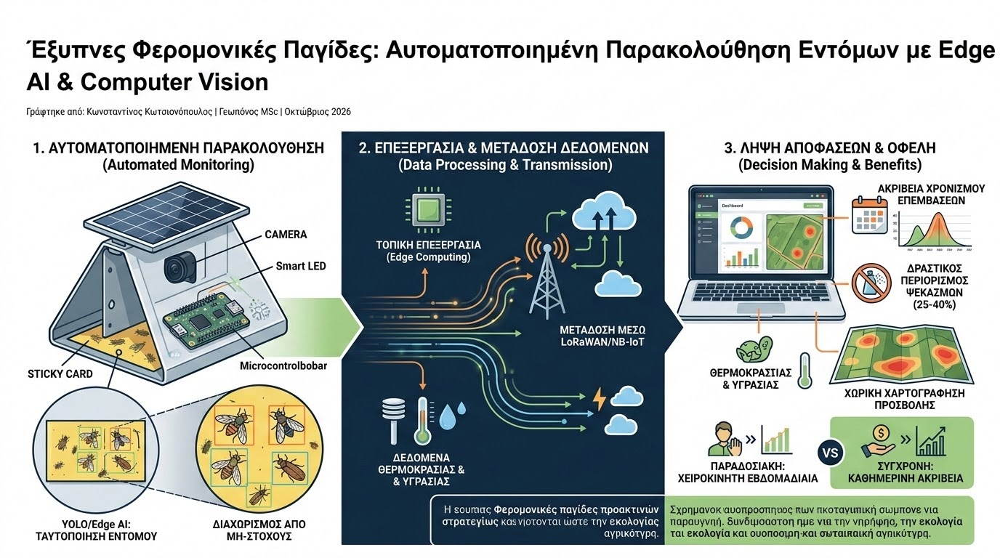

Η παρακολούθηση των πληθυσμών των εντόμων αποτελεί τη ραχοκοκαλιά της Ολοκληρωμένης Διαχείρισης Επιβλαβών Οργανισμών (IPM). Παραδοσιακά, τα δίκτυα φερομονικών ή τροφικών παγίδων απαιτούν χειροκίνητη επιθεώρηση σε εβδομαδιαία βάση. Αυτό συνεπάγεται υψηλό εργατικό κόστος, καθυστερημένη λήψη αποφάσεων και συχνά απώλεια του κρίσιμου παραθύρου επέμβασης όταν εκδηλώνεται απότομη έξαρση πτήσης (flight peak). Η σύγχρονη γεωπονική τεχνολογία επιλύει αυτό το κενό μέσω των Έξυπνων Φερομονικών Παγίδων (Smart Traps / e-Traps) με υπολογιστική όραση.
Μια σύγχρονη έξυπνη παγίδα ενσωματώνει οπτικό αισθητήρα υψηλής ανάλυσης, αυτόνομη τροφοδοσία μέσω μικρού φωτοβολταϊκού στοιχείου και μονάδα επεξεργασίας χαμηλής ισχύος (Microcontroller με Edge AI). Καθημερινά, σε προγραμματισμένο χρόνο, η κάμερα καταγράφει την κολλώδη επιφάνεια σύλληψης. Εξειδικευμένοι αλγόριθμοι ανίχνευσης αντικειμένων (όπως βελτιστοποιημένα μοντέλα YOLO ή MobileNet-SSD) εκτελούνται τοπικά στη συσκευή, ταυτοποιώντας το έντομο-στόχο —όπως τον δάκο (Bactrocera oleae), την καρπόκαψα (Cydia pomonella) ή την Tuta absoluta— και διαχωρίζοντάς το από μη-στόχους οργανισμούς ή υπολείμματα σκόνης.

Τα δεδομένα των καθημερινών συλλήψεων, μαζί με τις τοπικές μετρήσεις θερμοκρασίας και σχετικής υγρασίας, μεταδίδονται μέσω δικτύων χαμηλής κατανάλωσης (LoRaWAN ή NB-IoT) στην πλατφόρμα διαχείρισης. Εκεί, τα δεδομένα τροφοδοτούνται σε βιοκλιματικά φαινολογικά μοντέλα βαθμοημερών (Degree-Day Models). Το σύστημα υπολογίζει με ακρίβεια την πορεία των γενεών του εντόμου και προβλέπει την ακριβή ημερομηνία εκκόλαψης των αυγών, ειδοποιώντας τον γεωπόνο για το ιδανικό χρονικό σημείο εφαρμογής βιολογικών ή στοχευμένων χημικών μέσων.
Τα επιστημονικά τεκμηριωμένα πλεονεκτήματα των έξυπνων δικτύων παγίδευσης περιλαμβάνουν:
- Ακρίβεια Χρονισμού Επεμβάσεων: Ο καθημερινός ρυθμός σύλληψης αποτυπώνει την πραγματική δυναμική της πτήσης, επιτρέποντας επεμβάσεις ακριβώς κατά την κορύφωση της δραστηριότητας των ακμαίων ή πριν την ωοτοκία.
- Δραστικός Περιορισμός Ψεκασμών: Η αποφυγή προληπτικών ημερολογιακών εφαρμογών μειώνει τις επεμβάσεις κατά 25% έως 40%, προστατεύοντας τους ωφέλιμους οργανισμούς και τους επικονιαστές.
- Χωρική Χαρτογράφηση Προσβολής: Η γεωγραφική ανάλυση των συλλήψεων από πολλαπλά σημεία επιτρέπει τον εντοπισμό εστιών (hotspots), διευκολύνοντας την εφαρμογή τοπικών δολωματικών ψεκασμών αντί καθολικών καλύψεων.
Οι έξυπνες παγίδες μετατρέπουν τη φυτοπροστασία από μια εκ των υστέρων αντίδραση σε μια προληπτική στρατηγική ακριβείας. Συνδυάζοντας τη βιολογία του εντόμου με την τεχνητή νοημοσύνη και το IoT, ο σύγχρονος γεωπόνος προστατεύει αποτελεσματικά την παραγωγή, διατηρώντας το οικολογικό ισοζύγιο και ικανοποιώντας τις απαιτήσεις της αειφόρου γεωργίας.